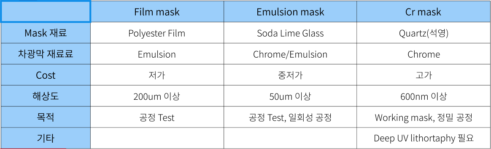

포토공정
패턴이 형성된 마스크에 마스크를 통과하도록 특정한 빛을 조사해 광 감응제(PR)가 도포된 wafer 상에 노광하여 패턴을 구현하는 기술
I. 포토공정 도입
II. 포토공정 구성요소
III. 포토공정 공정
IV. 포토공정 설비
ⅰ.Photolithography 란?
ii.Photolithography 조건
포토공정
패턴이 형성된 마스크에 마스크를 통과하도록 특정한 빛을 조사해 광 감응제(PR)가 도포된 wafer 상에 노광하여 패턴을 구현하는 기술
I. 포토공정 도입
II. 포토공정 구성요소
III. 포토공정 공정
IV. 포토공정 설비
ⅰ.Photolithography 란?
ii.Photolithography 조건
I .포토공정 도입
ⅰ.Photolithography란?
ⅱ.Photolithography 조건
 What is Photolithography?
What is Photolithography?
1) Lithography
- 라틴어로 평판인쇄라는 의미
2) Photolithography
- 증착공적, 시각공정들과 함께 3대 공정으로 반도체 전 공정에서 제일 많은 부분을 차지하는 핵심 공정
- 패턴이 형성된 마스크에 마스크를 통과하도록 특정한 빛을 조사해 광 감응제(PR)가 도포된 Wafer 상에 노광하여 패턴을 구현하는 기술
Photolithography 조건
1. 높은 정밀도 필요
2. 높은 해상도 필요
3. 적은 결함 필요
4. PR의 적당한 민감도 필요
5. Clean Room 필요
- 입자수, 온도, 습도, 공기압등을 제어하는 밀폐된 공간
- 특히 포토공정이 이뤄지는 구역은 Yellow Room이라 하며 광학적 영향이 적은 파장의 노란색 조명을 사용해서 붙혀진 이름
II .포토공정 구성요소
ⅰ.필수 구성 요소
ⅱ.Mask
ⅲ.PR
필수 구성 요소
1) Mask
- Wafer에 형성하고자 하는 패턴이 실제 패턴 크깅화 5:1 ~ 4:1의 비율로 그려져 있는 판
2) 빛
- 감광제에 화학 반응을 일으키는 역할을 하며 특정 파장대 영역의 빛을 이용 (단파장)
3) 감광제 (PR)
- 빛을 받으면 극성이 달라지는 물질로 빛을 받은뒤 더 단단해 지느냐 물러지느냐에 따라 불리는 이름이 달라짐
Mask
- 노광하기전 원하는 패턴을 새겨놓은 물질
- 새겨 놓은 패턴을 layout이라고 부름
- 최종적으로 원하는 layout은 각 layer별로 그림
- 하나의 layer에 두개 이상의 layout을 사용하는 경우도 있음(Ex. Double patterning)
Mask 종류
PR 분류
1) 용해도에 따른 분류
- 노광 후 어느 부분이 Developer에 용해되는지 여부에 따라서 분류하는 것, Positive와 Negative로 분류됨
2) 파장 흡수도에 따른 분류
- PR은 포토공정 뿐만아니라 mask 공정에서도 사용되기 때문에 lithography에 사용하는 빛의 종류에 따라 Photo/EUV/X-ray/E-beam용 PR로 분류할 수 있음
특히 Photolithography용 PR은 Near UV(일반적인 UV) / DUV(Deep UV)용 PR로 분류됨
1) PR 구성요소
1. Solvent : pr의 점도 결정
2. Polymer : Monomer(단위분자)가 수천개씩 결합한 상태, 현상후 패턴으로 남아 있는 Resist의 실체
3. Sensitizer : 현상 공정에서 Polymer를 녹게 하거나(Positive), 녹지 않게 하는 (Negative) 중개자 역할PAC(Photo Active Compund)라고 불리기도 하는데 일부 PR에서만 해당됨
2) PR 자격 요건
1. 해상도(Resolution)
2. 점착력(Adhesion)
3. 광 민감성(Expose rate, Sensitivity and Exposure source)
4. 공정 자유도(Process latitude)
5. 결함 수준(Pinholes, Particle and Contamination level)
6. 단차 피복 특성(Step coverage)
7. 열적 안정성(Thermal reliability and Thermal flow)